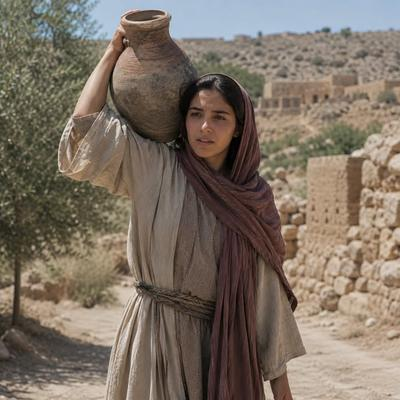

Si uno pregunta quién es la mujer más importante del cristianismo, la respuesta inmediata es: María, la madre de Jesús. A ella le han dedicado catedrales, basílicas, fiestas religiosas, himnos, procesiones, millones de pinturas y esculturas, además de una larga lista de dogmas. Sin embargo, cuando se dejan de lado las creencias religiosas y se pregunta por pruebas, el panorama cambia drásticamente.


La realidad es que sobre María de Nazaret sabemos muy, pero muy poco. Tan poco, que resulta extraño que la madre del personaje más importante del cristianismo, haya dejado una huella histórica prácticamente invisible. Y lo más curioso es que el mismo problema afecta a Jesús, a José y, en general, a toda esta familia, lo cual inevitablemente despierta dudas llenas de sospecha: ¿realmente habrán existido?
Igual que en el caso de Jesús, las únicas fuentes que hablan sobre María son textos cristianos redactados varias décadas después de los supuestos hechos, sin que exista un solo documento contemporáneo que la mencione. Ni registros romanos, ni archivos judíos, ni cartas privadas, ni inscripciones, ni referencias de cronistas de la época. Es verdad, eso no nos faculta a afirmar que no existió, pero el hecho de que su probable existencia histórica no pueda documentarse, llama sin duda la atención.
En efecto, tal como en el caso de Jesús, las únicas fuentes primarias sobre María son los cuatro evangelios canónicos. Lo cual significa que toda la información que poseemos sobre ella procede, esencialmente, de textos que no fueron concebidos como biografías objetivas ni como investigaciones históricas. Su propósito era anunciar un rumor, una supuesta «buena noticia»: que el mesías esperado por los judíos ya había venido al mundo, que se llamaba Jesús y que era además el Hijo de «Dios»; que había muerto y resucitado; pero que pronto regresaría a establecer la paz y el orden. Pero además, se trata de textos escritos aproximadamente entre los años 70 y 100 de nuestra era, es decir, varias décadas después de la supuesta muerte de Jesús. Y sus autores no fueron historiadores imparciales, sino creyentes que escribían para divulgar la nueva doctrina, lo que obliga al historiador a analizarlos con cautela, especialmente cuando narran acontecimientos sobrenaturales o presentan versiones diferentes de un mismo episodio.
Pero hay otro detalle muy importante, paradójicamente María ocupa en los evangelios un lugar mucho más discreto de lo que cabría esperar. Termina siendo una protagonista demasiado secundaria. El evangelio más antiguo, Marcos, cuando menciona a María ni siquiera la identifica por su nombre en el relato de la crucifixión, sino como «la madre de Jacobo el menor y de José» (Marcos 15:40). Mateo es el primero en mencionarla, cuando describe la genealogía de Jesús, que resultó ser la de José, su padrastro (Mateo 1:16). Pero igual que Marcos, al final se refiere a María como la madre de los hermanos de Jesús: «la madre de Jacobo y de José» (Mateo 27:56).
Sólo Mateo y Lucas mencionan a María en los pasajes relativos a la concepción, nacimiento, niñez y adolescencia de Jesús (Mateo 1-2, Lucas 1-2). Pero desde ese momento, es aludida casi sólo de una forma indirecta, cuando Jesús es adulto, casi como tratando de evitar su nombre. Y por su parte Juan, se refiere a María también de una forma indirecta cuando Jesús es adulto, también como evitando mencionar su nombre (Juan 6:42). Por lo que resulta sorprendente que la mujer que siglos después sería proclamada como «la Madre de Dios», concebida sin pecado original y elevada corporalmente al cielo, apenas reciba atención en los propios documentos que dieron origen al cristianismo.
Por su parte Pablo, prácticamente la ignora. Sus cartas son incluso anteriores a los evangelios, constituyendo los escritos cristianos más antiguos que conservamos. Pero Pablo jamás menciona a María por su nombre. Y la única referencia que suele encontrarse en sus escritos es en Gálatas 4:4, donde afirma que Jesús fue «nacido de mujer». Eso es todo. Ni anunciación, ni nacimiento virginal, ni Belén, ni José, ni ángeles, ni reyes magos, ni pastores. Para alguien que es autor de casi la cuarta parte del Nuevo Testamento, y que escribió extensamente sobre Jesús, el silencio respecto a María resulta, como mínimo, sorprendente.
¿Y qué dicen las fuentes no cristianas? Absolutamente nada. Ni el historiador judío Flavio Josefo, que escribió extensamente sobre personajes y acontecimientos del Oriente Medio en el siglo I, menciona a María. Como tampoco lo hacen los historiadores romanos Tácito o Suetonio. O sea, si existió María, ningún autor no cristiano conocido dejó constancia de ella. A ninguno le interesó.
Ahora bien, como dato curioso para los cristianos, el Corán en cambio menciona a María setenta veces, identificándola como Maryam o Miriam, la madre del profeta Isa, Jesús, siendo la única mujer nombrada en el Libro Sagrado de los musulmanes. Pero no olvidemos que el Corán fue escrito unos seiscientos años después de la supuesta existencia de Jesús.
Pero como ocurre con frecuencia cuando faltan datos, la imaginación terminó ocupando el espacio vacío, y los textos apócrifos se encargaron de llenar los huecos. Hacia mediados del siglo II, apareció el Protoevangelio de Santiago, texto apócrifo que pretendía contar aquello que los textos canónicos habían omitido. Y es allí donde aparecen por primera vez los nombres de los supuestos padres de María: Joaquín y Ana. Como también narra su nacimiento, su infancia, su permanencia en el Templo, y diversos episodios milagrosos. Pero ninguno de esos relatos puede ser verificado. Aunque resulta verdaderamente irónico que buena parte de lo que millones de cristianos creen saber sobre María, provenga precisamente de un libro que nunca fue aceptado como parte del Nuevo Testamento.
Sin embargo, quizás lo más absurdo de todo sea pensar que realmente existió una mujer que concibió milagrosamente al «Hijo de Dios», que recibió visitas angelicales, presenció milagros extraordinarios y convivió durante décadas con el personaje que cambiaría la historia de la humanidad. ¿Cómo es posible que nadie se interesara en recoger su testimonio mientras aún vivía? Nadie escribió una conversación con ella, ni registró sus recuerdos. Nadie anotó sus palabras, ni describió su aspecto físico, o conservó una carta atribuida a ella. Nadie dejó constancia de cuándo nació o cuándo murió. ¿Dónde fue sepultada? Es como si la madre del personaje más influyente del cristianismo hubiera pasado completamente desapercibida para sus propios contemporáneos.
Aunque la ausencia de evidencia no constituye una prueba de inexistencia, es inevitablemente sospechar que todo esto se trata de un montaje. Es verdad, la historia antigua está llena de personajes escasamente documentados, pero cuanto más extraordinarias son las afirmaciones, mayor debe ser la exigencia de pruebas. Y en el caso de María ocurre justamente lo contrario: la importancia teológica que adquirió con el paso de los siglos es gigantesca, mientras que la evidencia histórica independiente es inexistente.
En fin, asumamos que quizá existió cierta María (un nombre muy común en esa cultura) como una mujer judía anónima de Galilea, cuya figura fue magnificada por la tradición. Pero es evidente que los relatos sobre ella fueron desarrollándose con el paso de las décadas o siglos para reforzar determinadas ideas teológicas. Al parecer, nunca sabremos cuánto hay de historia y cuánto de construcción literaria en lo que se ha dicho sobre ella.
Lo que sí parece evidente, es que si alguien hubiera querido escribir una biografía históricamente sólida de María de Nazaret, habría llegado muy pronto a una frustrante conclusión: después de dos mil años de devoción, seguimos sin saber prácticamente nada sobre la mujer más venerada del cristianismo. Toda una proeza para una figura que, según la tradición, cambió el rumbo de la humanidad, al haber dado a luz nada menos que al «hijo de Dios».
[Godless Freeman]
Comentarios
Comments powered by Disqus